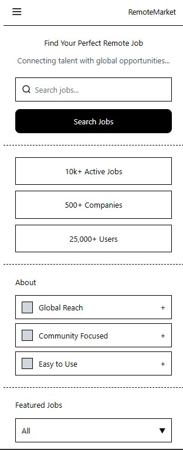
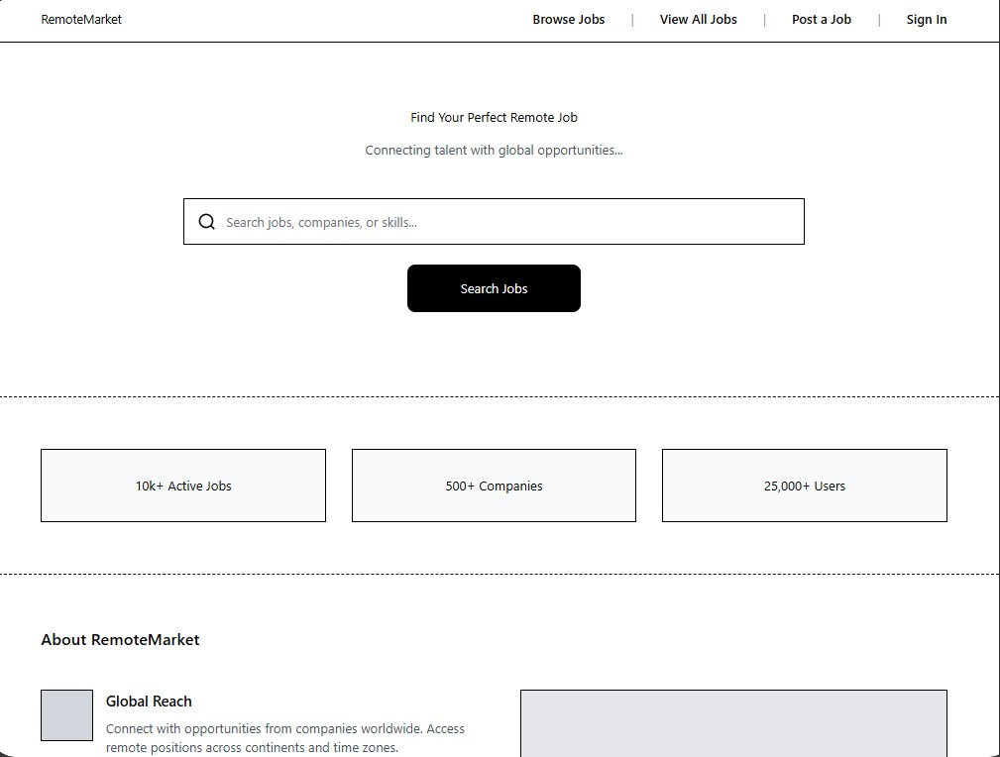

1. Site Name
RemoteMarket
A short, memorable name that instantly communicates a marketplace for remote jobs. It’s targeted at students and recent graduates. Possible real-world domains: remotemarket.co or getremotemarket.com.
2. Site Purpose
RemoteMarket helps college students and recent graduates discover legitimate remote jobs and internships by offering:
- Curated, filterable remote job listings
- Detailed job pages with direct application links
- A profile builder that generates a shareable one-page résumé
- Resources and tips for landing remote work
- A contact form for employers to submit new listings
3. Scenarios
- As a junior computer science student with no professional experience, what remote internships are currently available that value personal projects?
- I just graduated with a business degree — how do I quickly create a professional remote-work profile and find entry-level remote positions?
4. Color Schema
- Primary Blue (#2563eb) → Main headings, navigation bar, links
- Dark Blue (#1e40af) → Hover states, sub-headings
- Amber (#f59e0b) → Call-to-action buttons (“Apply Now”, “Generate Profile”)
5. Typography
- Headings: Playfair Display (serif) – used for all <h1> and <h2> elements
- Body text: Inter (sans-serif) – used for paragraphs, lists, and UI text
Both fonts are loaded from Google Fonts and applied on this page.
6. Wireframe – Home Page
Mobile View

Desktop View

Wireframes created with Figma AI • Low-fidelity layout showing responsive design